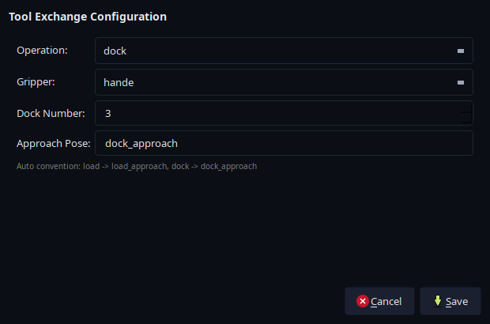

Tools and end effectors
Use Start Gripper to declare the attached tool, End Effector to operate a gripper, and Tool Exchange to dock or load a tool. The pipettor uses its own task type.
The CMS configuration includes none, hande, epick, 2fg7, and pipettor. Start Gripper (start_gripper in JSON) must match the tool already attached. Changing this setting selects a model; it does not physically change tools. See end-effector configuration when adding or modifying a tool.
Gripper states
In the GUI, add an End Effector step and double-click it. Set Type to the attached gripper and choose a matching Action:
Tool |
Grasp |
Release |
|---|---|---|
Hand-E ( |
|
|
ePick ( |
|
|
2FG7 ( |
|
|
The Action list includes states for multiple tools, so check that the state belongs to the selected gripper.
In JSON, end_effector_action takes the exact state name. For example, this script opens an already attached Hand-E:
{
"start_gripper": "hande",
"tasks": [
{
"task_type": "end_effector",
"end_effector_action": "hande_open"
}
]
}
The optional end_effector_type defaults to the current gripper. Vision pick/place tasks also accept grasp and release, which use the beamline’s state mapping; standalone End Effector tasks use literal state names. See the task fields.
none and pipettor have no gripper planning group. An End Effector task for either returns success without actuating a device; use Pipettor for pipette commands.
Tool exchange
To replace one tool with another, dock the attached tool first, then load the replacement. Add a Tool Exchange step for each operation:
Operation |
Set |
Tool state after success |
|---|---|---|
|
The currently attached tool |
|
|
The tool to pick up; requires |
The requested tool |
Set Dock Number to the tool’s dock and Approach Pose to a calibrated pose for the configured dock layout. The movement uses the beamline’s dock spacing and load/dock sequence. See tool-exchange fields.
Docking insertion and retreat must plan in full. A partial path would shift the start of the next move, so EROBS rejects it. A successful plan does not confirm that the tool attached.
Changing Operation in the editor resets Approach Pose to load_approach or dock_approach. Check that pose before saving.
{kind=link}

The tool-exchange editor showing Hand-E docking settings. Saving the step does not execute it. Open the full-resolution screenshot.
{kind=link}
Tool exchange ends the current motion batch. After the attachment changes, EROBS restarts MoveIt with the new tool’s configuration. The before-and-after RViz views show this model change in a mock session. Tool-exchange tasks do not support Dry Run.
If an exchange fails, establish which tool is attached before retrying: the mechanical change can finish before model initialization fails. See tool-change recovery and known limits.
Pipettor operations
Add a Pipettor step and choose SUCK (aspirate), EXPEL (dispense), EJECT_TIP, or SET_LED. These commands operate the device without moving the arm. Add positioning and retreat as separate steps. Pipettor tasks do not support Dry Run.
The GUI’s Volume % field and JSON’s volume_pct use a fraction from 0–1, not microlitres. The imported driver currently ignores this value and uses fixed SUCK/EXPEL sequences. Changing it does not set a metered liquid volume. See pipettor fields.
For rack workflows, pickup_tip and pickup_vial generate task sequences from the installation’s rack configuration. pickup_vial can also include liquid handling. See the macro reference.
ePick status and limits
Successful vacuum_on execution does not confirm that a sample remains attached. Continuous vacuum monitoring and loss-triggered aborts are disabled, and vacuum_ok can be returned without a measurement.
Consecutive gripper and MoveTo steps can share a batch, with no automatic vacuum-confirmation step between them. Use the deployment’s handling procedure to confirm retention before a physical transfer.
After changing a suction cup, update the cup geometry and model configuration to match it.